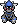

電擊波Shock Wave
- 屬性
- 電
- 分類
- 特殊
- 威力
- 60
- 命中
- 必中
- SP
- 20
- 冷卻
- 1.4 秒（特殊組）
- 範圍
- 飛行道具
- 距離
- 4 格
- 段數
- 1
- 前搖
- 0.25 秒
- 接觸
- 否
招式分類跟隨招式的 屬性 （第三世代規則，與火紅／葉綠相同）：火、水、草、電、超能力、冰、龍、惡屬性招式一律是特殊招式；其他屬性是物理招式（例外：分擔痛楚）。因此暗影球是物理招式，攀瀑是特殊招式。這是刻意設計，不是錯誤。
即時戰鬥效果
必定命中。
朝目標射出，飛行直到命中。
升級時學會
招式光碟
 電屬性招式光碟 ・少見（每打倒一隻該屬性寶可夢 1%，由 6 個招式分配）
電屬性招式光碟 ・少見（每打倒一隻該屬性寶可夢 1%，由 6 個招式分配）
可以教會 146 隻寶可夢：
 小拉達
小拉達 拉達
拉達 皮卡丘
皮卡丘 雷丘
雷丘 尼多蘭
尼多蘭 尼多娜尼多后
尼多娜尼多后 尼多朗尼多力諾
尼多朗尼多力諾 尼多王
尼多王 皮皮
皮皮 皮可西
皮可西 胖丁
胖丁 胖可丁
胖可丁 喵喵
喵喵 貓老大
貓老大 凱西
凱西 勇基拉
勇基拉 胡地
胡地 小磁怪
小磁怪 三合一磁怪
三合一磁怪 臭泥
臭泥 臭臭泥
臭臭泥 霹靂電球
霹靂電球 頑皮雷彈
頑皮雷彈 大舌頭瓦斯彈
大舌頭瓦斯彈 雙彈瓦斯
雙彈瓦斯 獨角犀牛
獨角犀牛 鑽角犀獸
鑽角犀獸 吉利蛋
吉利蛋 袋獸
袋獸 魔牆人偶
魔牆人偶 電擊獸
電擊獸 肯泰羅
肯泰羅 拉普拉斯
拉普拉斯 雷伊布
雷伊布 多邊獸
多邊獸 卡比獸
卡比獸 閃電鳥
閃電鳥 迷你龍
迷你龍 哈克龍
哈克龍 快龍
快龍 超夢
超夢 夢幻
夢幻 尾立
尾立 大尾立
大尾立 燈籠魚
燈籠魚 電燈怪
電燈怪 皮丘
皮丘 皮寶寶
皮寶寶 寶寶丁
寶寶丁 波克比
波克比 波克基古咩利羊
波克基古咩利羊 茸茸羊
茸茸羊 電龍
電龍 長尾怪手
長尾怪手 夢妖
夢妖 麒麟奇
麒麟奇 土龍弟弟
土龍弟弟 布魯
布魯 布魯皇
布魯皇 千針魚
千針魚 多邊獸Ⅱ
多邊獸Ⅱ 驚角鹿
驚角鹿 電擊怪
電擊怪 大奶罐
大奶罐 幸福蛋
幸福蛋 雷公
雷公 班基拉斯
班基拉斯 洛奇亞
洛奇亞 鳳王
鳳王 時拉比
時拉比 蛇紋熊
蛇紋熊 直衝熊
直衝熊 長翅鷗
長翅鷗 大嘴鷗
大嘴鷗 拉魯拉絲
拉魯拉絲 奇魯莉安
奇魯莉安 沙奈朵
沙奈朵 懶人獺
懶人獺 過動猿
過動猿 請假王
請假王 咕妞妞
咕妞妞 吼爆彈
吼爆彈 爆音怪朝北鼻
爆音怪朝北鼻 向尾喵
向尾喵 優雅貓
優雅貓 勾魂眼
勾魂眼 可可多拉
可可多拉 可多拉
可多拉 波士可多拉落雷獸
波士可多拉落雷獸 雷電獸
雷電獸 正電拍拍
正電拍拍 負電拍拍
負電拍拍 電螢蟲
電螢蟲 甜甜螢
甜甜螢 溶食獸
溶食獸 吞食獸
吞食獸 跳跳豬
跳跳豬 噗噗豬
噗噗豬 晃晃斑
晃晃斑 貓鼬斬
貓鼬斬 飄浮泡泡
飄浮泡泡 變隱龍
變隱龍 怨影娃娃
怨影娃娃 詛咒娃娃
詛咒娃娃 風鈴鈴
風鈴鈴 阿勃梭魯
阿勃梭魯 大牙狸
大牙狸 大尾狸
大尾狸 小貓怪
小貓怪 勒克貓
勒克貓 倫琴貓
倫琴貓 頭蓋龍
頭蓋龍
戰槌龍 盾甲龍
盾甲龍 護城龍
護城龍 帕奇利茲
帕奇利茲 雙尾怪手
雙尾怪手 飄飄球
飄飄球 隨風球
隨風球 捲捲耳
捲捲耳 長耳兔
長耳兔 夢妖魔
夢妖魔 魅力喵
魅力喵 東施喵
東施喵 鈴鐺響
鈴鐺響 魔尼尼
魔尼尼 小福蛋
小福蛋 花岩怪
花岩怪 小卡比獸
小卡比獸 自爆磁怪
自爆磁怪 大舌舔
大舌舔 超甲狂犀
超甲狂犀 巨蔓藤
巨蔓藤 電擊魔獸
電擊魔獸 波克基斯
波克基斯 多邊獸Ｚ
多邊獸Ｚ 艾路雷朵
艾路雷朵 大朝北鼻
大朝北鼻 雪妖女
雪妖女 洛托姆
洛托姆